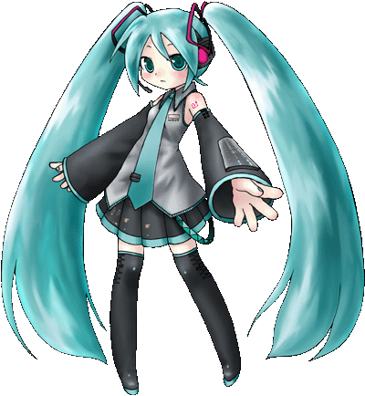

La chica que yo conozco, Nonoka, nunca se daría
por vencida, hasta lograr su objetivo. Ella es
honesta y sincera. Antes de darnos cuenta, ella ya
había cambiado nuestras maneras de pensar. Así es mi amiga.
¿Estoy equivocada?
heiht="0">
